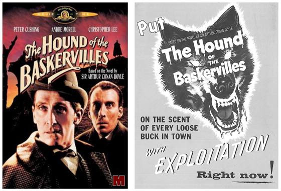

최근 본 영화 두편 :)
HUSH 2016
여주인공이 안젤리나졸리 닮았당.
찾아봤더니 감독과 부부사이로 각본에 참여 / 대사, 소리가 없는 영화를 만들어보고 싶다는 아이디어에서 출발했다고.
연기가 좋았습니다. 몰입도 훈늉하구요.
별 장황한 설명없이 범인의 찌질한면을 잘 보여주었다고 생각.

The Hound of the baskervilles 1959
무려 1959년 영화 ㅋㅋㅋ 젊은 크리스토퍼 리 를 볼수있다.
오래된 영화라 액션이나 연출에서 빵빵터지는 장면이 많았다. 귀여워 ㅋㅋㅋㅋㅋ
그시절 되게 힘들게 찍었구나 싶고 ㅋㅋㅋㅋㅋ
셜록 드라마 다시 보고싶어짐 :3